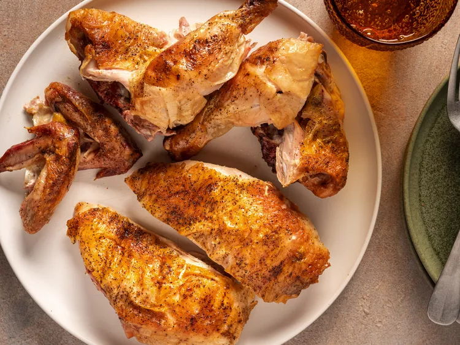

Here's an image :
Butterflying the chicken ensures that the legs will cook through before the breast meat becomes overcooked and dry. Skewering the legs and breast of the chicken together makes it easier to flip and maneuver. Starting the chicken on the cooler side of a two-zone grill fire renders fat and evaporates moisture from the skin while helping the bird cook through evenly. Finishing the chicken breast-side down directly over the coals crisps and browns the rendered, dehydrated skin.